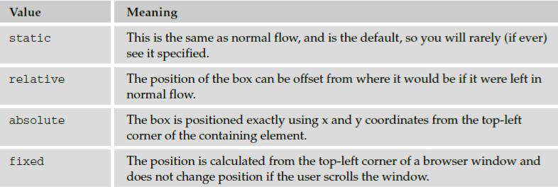
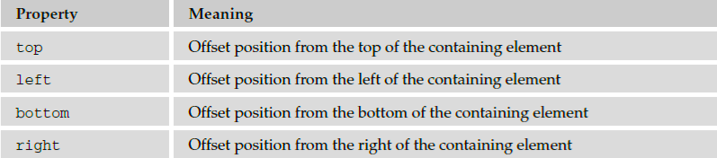
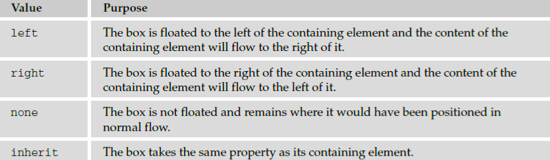

Additional Rules
Before you move on to look at how you can use CSS to position elements on a page, let ’ s take a look at
three rules:
@import imports another style sheet into the current style sheet.
!important indicates that some rules should take precedence over others.
@charset indicates the character set the style sheet uses.
The @import Rule: Modularized Style Sheets
The @import rule allows you to import styles from another style sheet. It should appear right at the start
of the style sheet before any of the rules, and its value is a URL. It can be written in one of two ways:
@import “mystyle.css”;
@import url(“mystyle.css”);
Either works fine. The significance of the @import rule is that it allows you to develop your style sheets
with a modular approach. You can create separate style sheets for different aspects of your site. This is
the concept I started to introduce in the last chapter when you created a style sheet for code styles. Now
if you want to include those styles in any other style sheet you write, rather than repeating them you just
use the @import rule to bring those rules into the style sheet you are writing.
Here is an example of a style sheet that imports the codeStyles.css style sheet from the last chapter
(for convenience, this file has been copied into the folder for the code download for this chapter). This
example is ch08_eg26.css :
@import “codeStyles.css”
body {
background-color:#ffffff;
font-family:arial, verdana, helvetica, sans-serif;}
h1 {font-size:24pt;}
As you can see, it does not contain many rules itself; the code styles have all been taken from the
imported style sheet. Figure 8 - 26 shows a page that uses this style sheet that has imported the styles
for the code.
You might also consider developing modular style sheets that control appearance of forms, different
layouts, and so on. If a style sheet contains a rule for one element (say the < body > element was given a
black background color), this rule would take precedence over any conflicting rules that applied to
imported style sheets (for example, if there was a rule in the imported style sheet indicating that the
< body > element should be given a red background color).
The !important Rule
When there is a chance that two style - sheet rules might conflict with each other, you can use
the !important rule to indicate that this particular rule should take precedence over others.
This can be helpful if you are developing modular style sheets and you want to ensure that a rule in the
included style sheets takes precedence over any conflicting rules in the style sheet containing the
@import rule (which would otherwise have taken precedence).
It can also be helpful when users have set their own style sheets. Part of the aim of separating style from
content, using CSS to style web pages, was to make them more accessible to those with visual
impairments. So after you have spent your valuable time learning about CSS and how to write your style
sheets to make your sites attractive, I have to tell you that users can create their own style sheets, that can
override your settings!
In reality, very few people do create their own CSS style sheets to view pages the way they want, but the
ability is there, and was designed for those with disabilities. By default, your style sheet rather than
theirs should be viewed; however, the user ’ s style sheet can contain the !important rule, which says
“ override the site ’ s style sheet for this property. ” For example, a user might use the rule like so:
p {font-size:18pt !important;
font-weight:bold !important;}
There is nothing you can do to force the user to use your style sheet, but in practice, a very small
percentage (if any) of your visitors will create their own style sheets, so you should not worry about it —
it ’ s covered here only so that you understand what the rule is and why you may come across it.
Note that in CSS1, the !important rule allowed authors to overrule users ’ style sheets, but this was
switched over in the second version.
The @charset Rule
If you are writing your style sheet using a character set that features characters other than the basic Latin
characters (the ASCII or ISO - 8859 - 1 character sets), you might want to set the @charset rule at the top of
your style sheet to indicate what character set the style sheet is written in.
The @charset rule must be written right at the beginning of the style sheet without even a space before
it. The value is held in quotes and should be one of the language codes specified in Appendix G.
@charset “iso-8859-1”
Positioning and Layout with CSS
Up to this point, you have learned how the content of each element is represented in CSS using a box,
and you ’ ve seen many of the properties you can use to affect the appearance of the box and its content.
Now it ’ s time to look at how to control where the boxes should be positioned within a page.
In CSS, there are three positioning schemes that allow you to control layout of a page: normal , float , and
absolute positioning. In the following sections, you ’ ll be seeing how you can use each of these to indicate
where the content of an element should appear on the page.
While the CSS positioning schemes were not really intended to be a mechanism for controlling the layout
of pages, they have become the standard way to lay out pages on the Web. For the rest of the chapter, we
will be looking at how you can control where boxes appear on the page using CSS; then in the next
chapter we will look at how to apply this knowledge to create attractive layouts.
Before CSS, web designers commonly used tables to control the layout of web pages. While you will still
occasionally see tables used for this purpose, they were designed to contain tabular data, and you should
aim to control layout of new pages using CSS instead. If you use CSS to control layout rather than
tables your pages will be smaller (in terms of lines of code), easier to adapt to different devices, easier to
redesign, faster to load, and more visible to search engines.
Normal Flow
By default, elements are laid out on the page using what is known as normal flow . In normal flow, the
block - level elements within a page will flow from top to bottom (remember that each block - level element
will appear as if it is on a new line), and inline elements will flow from left to right (because they do not
start on a new line).
For example, each heading and paragraph should appear on a different line, whereas the contents of
elements such as < b > , < em > , and < span > sit within a paragraph or other block - level element; they do not
start on new lines.
The position Property
The position property allows you to specify how you want to control the position for a box
(and is generally used to take items out of normal flow). It can take the four values listed in the table
that follows:

Box Offset Properties
As you ’ ll see in the coming sections, when boxes have a position property whose value is relative ,
absolute , or fixed , they will also use box offset properties to indicate where these boxes should be
positioned. The table that follows lists the box offset properties.

The z - index Property
Elements positioned using absolute and relative positioning often overlap other elements. When this
happens the default behavior is to have the first elements underneath later ones. This is known as
stacking context . You can specify which of the boxes appears on top using the z - index property. If you
are familiar with graphic design packages, the stacking context is similar to using the “ bring to top ” and
“ send to back ” features.
The value of the z - index property is a number, and the higher the number the nearer the top that
element should be displayed (for example, an item with a z - index of 10 will appear on top of an item
with a z - index of 5).
To better understand z - index , take a look at another example of absolute positioning — this time there
are just three paragraphs ( ch08_eg31.css ):
< p class=”one” >Here is paragraph < b >one< /b >. This will be at the top of the
page.< /p >
< p class=”two” >Here is paragraph < b >two< /b >. This will be underneath the
other elements.< /p >
< p class=”three” >Here is paragraph < b >three< /b >. This will be at the bottom
of the page.< /p >
Each of these paragraphs shares common width , background - color , padding , and border properties,
which are specified in the first rule (this saves us from having to repeat the same properties for each
individual < p > element). Then each paragraph is positioned separately using absolute positioning.
Because these paragraphs now all overlap, the z - index property is added to control which one appears
on top; the higher the value, the nearer the top it ends up:
p {
width:200px;
background-color:#ffffff;
padding:5px; margin:10px;
border-style:solid; border-color:#000000; border-width:2px;}
p.one {
z-index:3;
position:absolute;
left:0px; top:0px;}
p.two {
z-index:1;
position:absolute;
left:150px; top: 25px;}
p.three {
z-index:2;
position:absolute;
left:40px; top:35px;}
the second paragraph now appears to be underneath the first and third
paragraphs, and the first one remains on top.
Floating Using the float Property
The float property allows you to take an element out of normal flow and place it as far to the left or
right of a containing box as possible.
Anything else that lives in the containing element will flow around the element that is associated with
the float property (just like text and other elements can flow around an image).
Whenever you specify a float property on an element, you must also set a width property indicating
the width that the box should take up; otherwise, it will automatically take up 100 percent of the width
of the containing box, leaving no space for things to flow around it and therefore making it appear just
like a plain block - level element .
To indicate that you want a box floated either to the left or the right of the containing box, you set the
float property, which can take one of the values listed in the table that follows.

When a box uses the float property, vertical margins will not be collapsed above or below it like block
boxes in normal flow can be (because it has been taken out of normal flow). The floated box will be
aligned with the top of the containing box.
Look at the following XHTML ( ch08_eg32.html ) and note how the first element has a class
attribute whose value is pullQuote:
< body >
< h1 > Heading < /h1 >
< p class=”pullQuote” > Here is the pullquote. It will be removed from
normal flow and appear on the right of the page. < /p >
< p > This is where the story starts and it will appear at the top of the
page under the heading. You can think of it as the first paragraph of an
article or story. In this example, the pull quote gets moved across to the
right of the page. There will be another paragraph underneath. < /p >
< p > Here is another paragraph. This one will be at the bottom of the page. < /p >
< /body >
As this example shows, the first < p > element is taken out of the normal flow and placed to the right of
the containing < body > element using the float property with a value of right ( ch08_eg32.css ):
body {
color:#000000;
background-color:#ffffff;
font-size:12px;
margin:10px;
width:514px;
border: 1px solid #000000;}
p {
background-color:#FFFFFF;
border:2px solid #000000;
padding:5px;
margin:5px;
width:500px;}
.pullQuote {
float:right;
width:150px;}